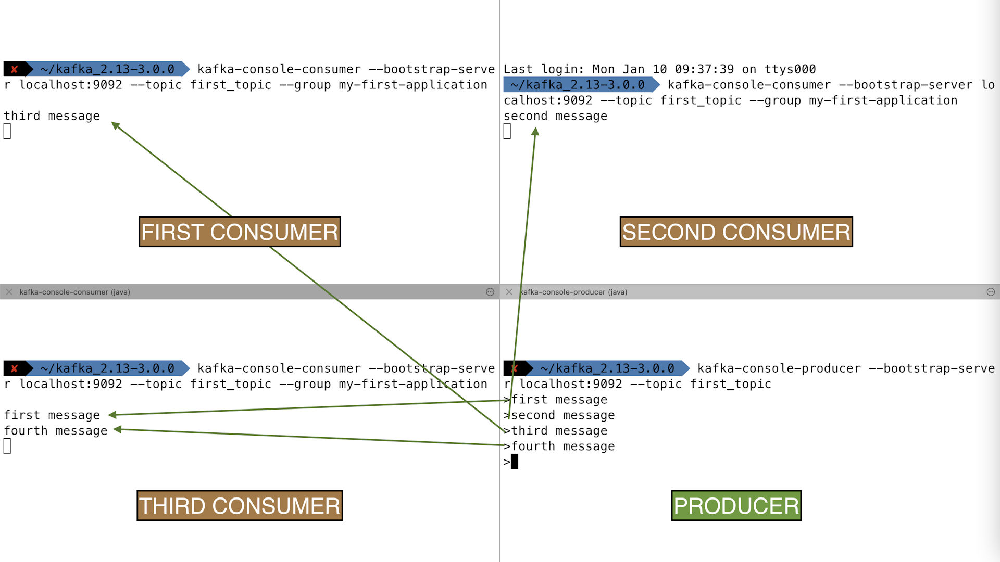
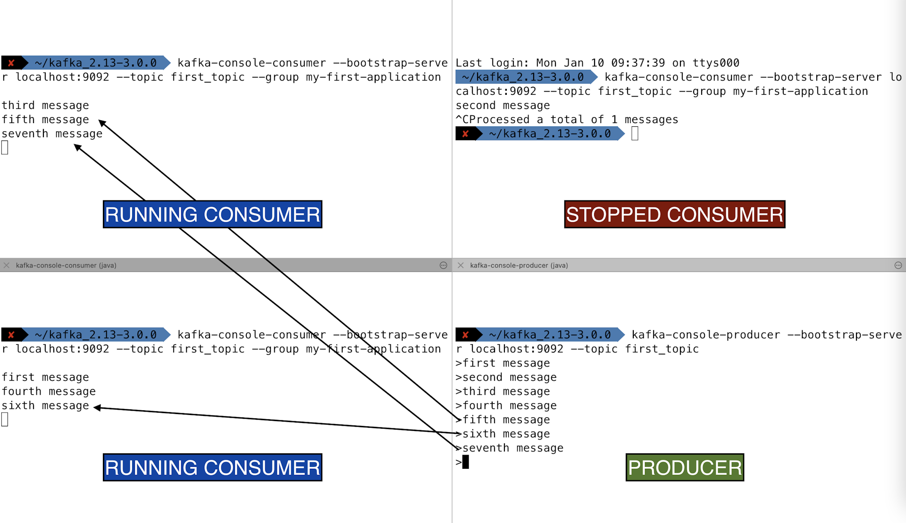
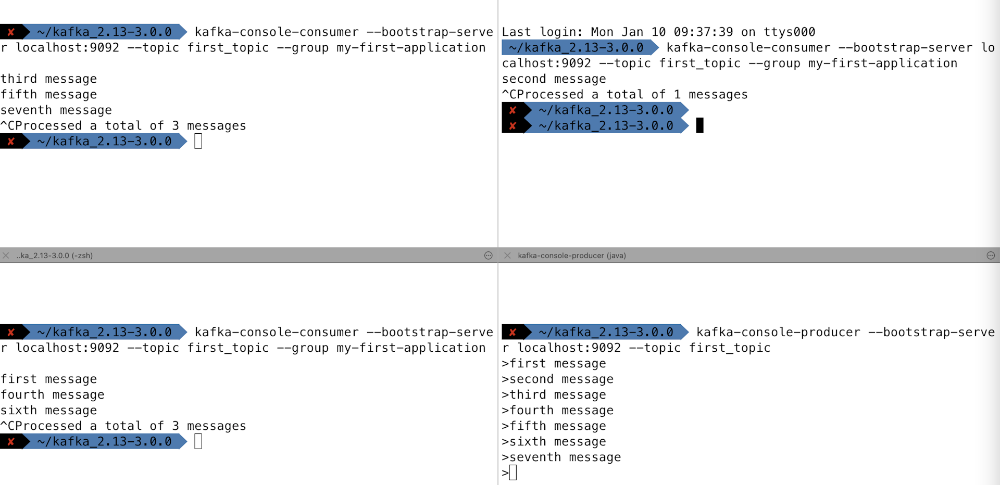

1. Create Consumer In Group
-
要启动消费者组中的消费者：
-
创建一个至少有两个分区的主题，并向其发送数据；
-
创建kafka-console-consumer并使用 --group指定组名称；
-
打开新的terminal或shell window；
-
创建第二个kafka-console-consumer，同样也使用—group参数指定组名称；
-
发送数据到主题，可看到消费者共享读取(consumer sharing read)；
-
2. Create Consumer Group
-
一个组中的消费者不能多于Kafka 主题中的分区，故需先创建具有几个分区的主题；
./kafka-topics.sh \
--bootstrap-server 192.168.0.123:9092 \
--topic topic-elf --create \
--partitions 3 --replication-factor 1-
在名为(elf-app)的消费者组中启动消费者：
./kafka-console-consumer.sh --bootstrap-server 192.168.0.123:9092 \
--topic topic-elf --group elf-app-
打开新的的终端terminal，并在同一消费者组(elf-app)
中启动第二个消费者，即使用完全相同的命令；
./kafka-console-consumer.sh --bootstrap-server 192.168.0.123:9092 \
--topic topic-elf --group elf-app-
打开新的终端terminal，并在同一消费者组(elf-app)中启动第三个消费者：
./kafka-console-consumer.sh --bootstrap-server 192.168.0.123:9092 \
--topic topic-elf --group elf-app-
消费者组elf-app中每个消费者都将被分配一个分区；在该主题中生成一些字符串消息；
./kafka-console-producer.sh --bootstrap-server 192.168.0.123:9092 \
--topic topic-elf
> first message
> second message
> third message
> fourth message-
每个消费者将仅显示分配给它们分区上生成的消息：

-
若停止某个消费者，则消息自动发送给剩余消费者，
因消费者组中的消费者会自动执行消费者重新平衡(consumer rebalance)；

-
停止所有消费者：

-
继续对主题进行生产(producing)：
> eigth message
> ninth message
> tenth message-
组中的消费者重新启动后，消费者将从最新提交的偏移量
(latest committed offset)中读取并仅读取刚刚生成的消息；
./kafka-console-consumer.sh --bootstrap-server 192.168.0.123:9092 \
--topic topic-elf --group elf-app
eigth message
ninth message
tenth message